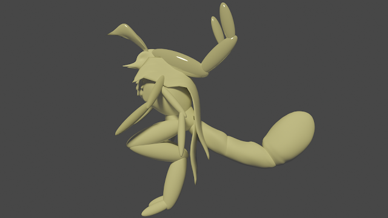

Zetequazals (May 7, 2022)
Here's some digital drawings of it. Falnq_Sheep helped me come up with the
name idea by suggesting a combination of Beetle and Squirrel, since those are its most striking features.
They are very colorful, and they have a big tail like a squirrels. They have ant mandibles, two sets of arms, flat and digigrade legs for easy movement.
They have mandibles like an ants, and other appendages. I can't decide if I want them to be very big or very small, but they are quite long.
And here's a simple blender render.
